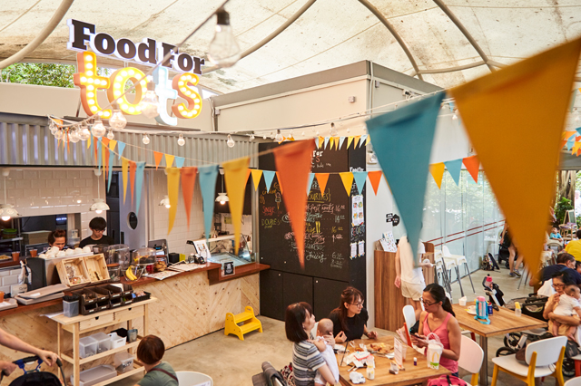
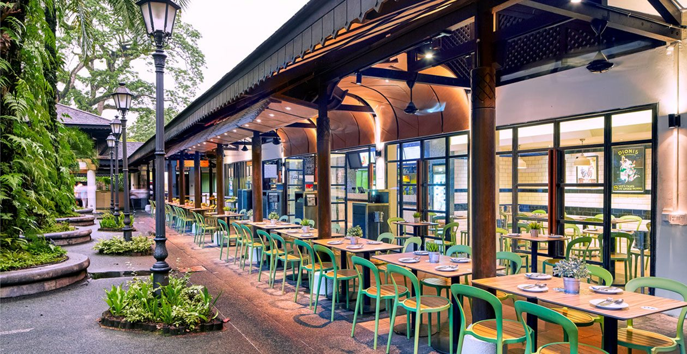
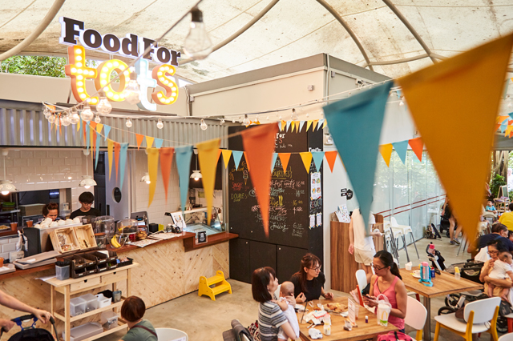
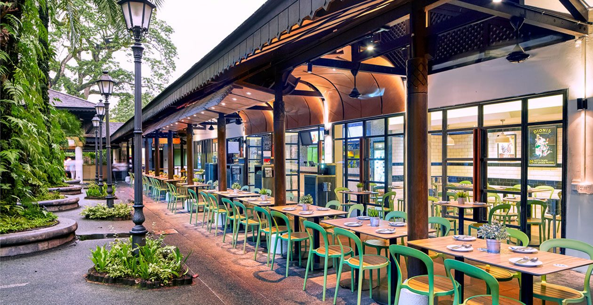
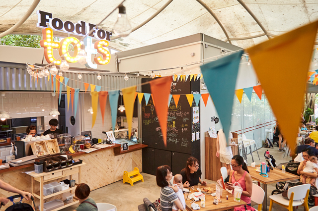
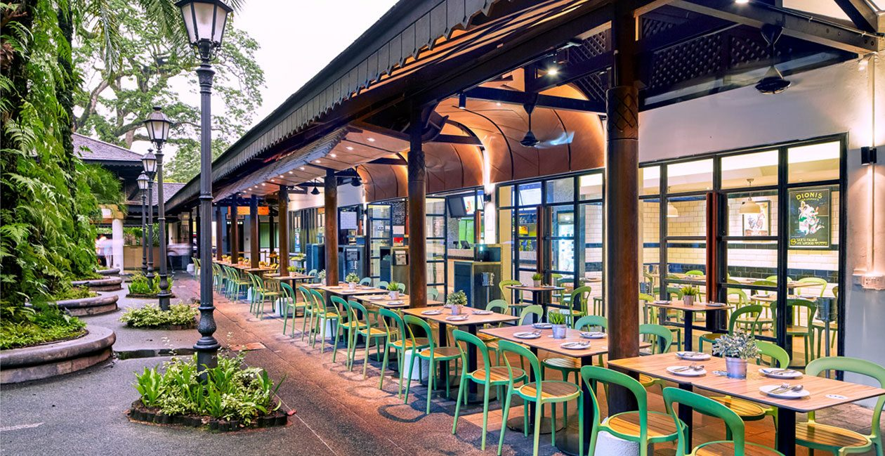

The Singapore Botanic Gardens is a tropical garden that is over 150-year-old, located at the fringe of Singapore’s Orchard Road shopping district. It was awarded the UNESCO World Heritage Site status in 2015 and has ever since been a sight for both Singaporeans and foreigners. The Botanic Gardens’ holds more than 10,000 flora spread over 82 hectares of land and it receives about 4.5 million visitors annually. Over the years, the botanic gardens have become popular for its multiple functions such as being an attraction for young families with a suitable environment for kids as well as having many food options that Singaporean’s love.
Entry to the Botanic Gardens is free except for the National Orchid Garden. Opening hours are from 5am to 12 midnight daily and it is accessible via MRT and bus.
Over the years the Singapore Botanic Garden has expanded and there are now there are many features that one can find within it.
Singapore Botanic Gardens gives families the perfect opportunity to bond. It has the perfect spots for families to lay out their mats along Palm Valley and have a meal together while letting their kids run wild. Singapore Botanic Gardens is also kid-friendly as it has the Jacob Ballas Children’s Garden nearby. Families could spend time exploring the gardens with their children or spend time feeding the terrapins and swan-spotting at Swan Lake.
Another reason for families and friends to travel down to the Singapore Botanic Gardens would be to attend the events hosted at the Shaw Foundation Symphony Stage annually. The grass area surrounding the stage would be packed and it is definitely an experience, so do not miss your chance!
The Singapore Botanic Gardens also bestows a blissful pathway for all. It provides the opportunity for people to stay healthy by allowing them to the option to jog through the gardens while taking in the beautiful sights of the flora and fauna all around. The Hanging Roots Passage, Swiss Granite Ball and the Ginger Falls are some of the many attractions that you will pass while jogging. It is the perfect way to ease the mind after a long day at work or even a better way to start of your mornings. It provides the option of long and short distance running, of less than 5km run up to 15km runs, and for those who prefer not to sweat it out, taking a walk around the Botanic Gardens still bears the same experience.
The Singapore Botanic Gardens has recently become a photographer’s paradise. It holds picturesque sights for the perfect Instagram shot. Some of these include the popular Golden Arches in the Orchid Garden, the Bandstand, the Corner House and the Palm Valley, where we can pretend we are in Los Angeles for a while. Many do come here to take wedding photos while others, such as directors, have filmed used the Botanic Gardens to film scenes before.
The way to people’s heart, especially Singaporeans’.

